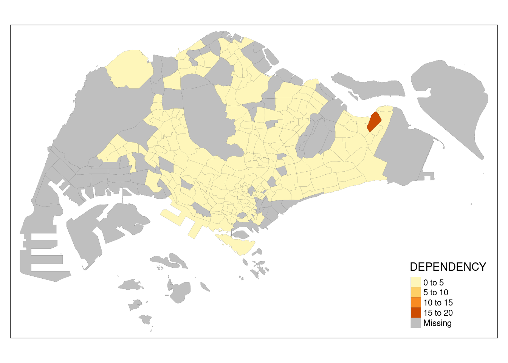
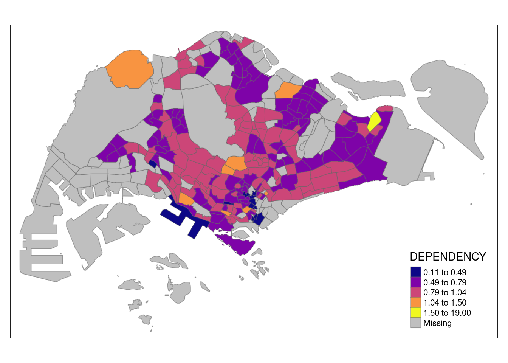
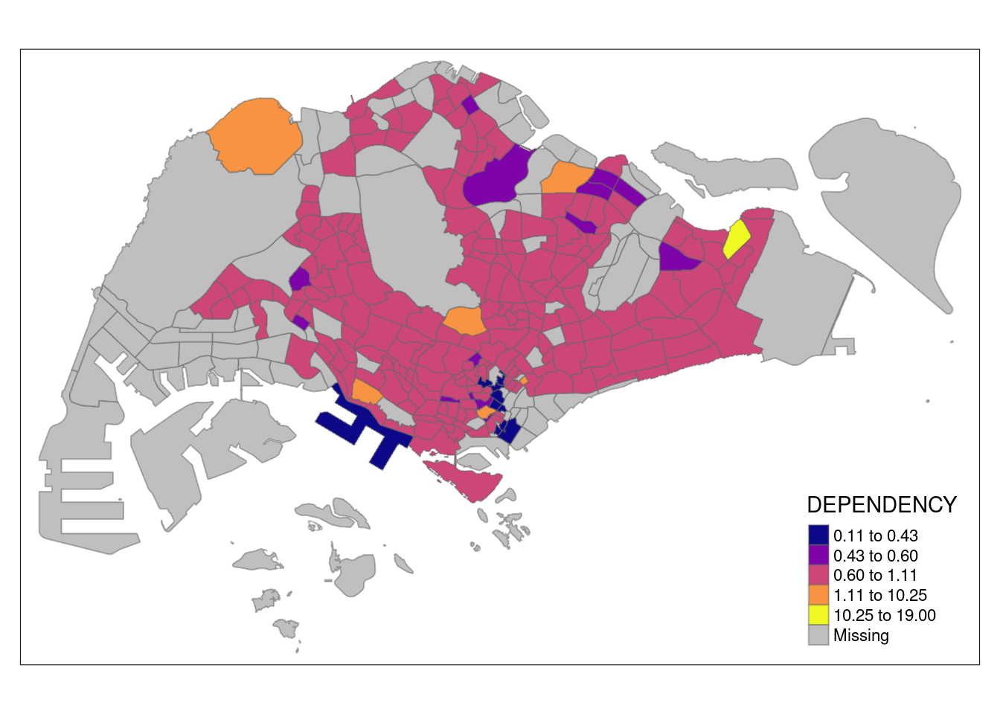
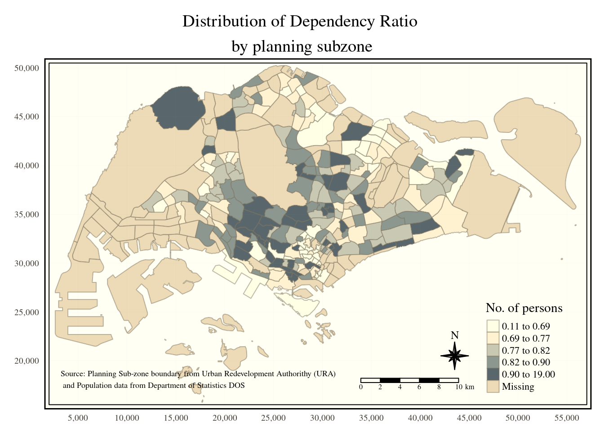
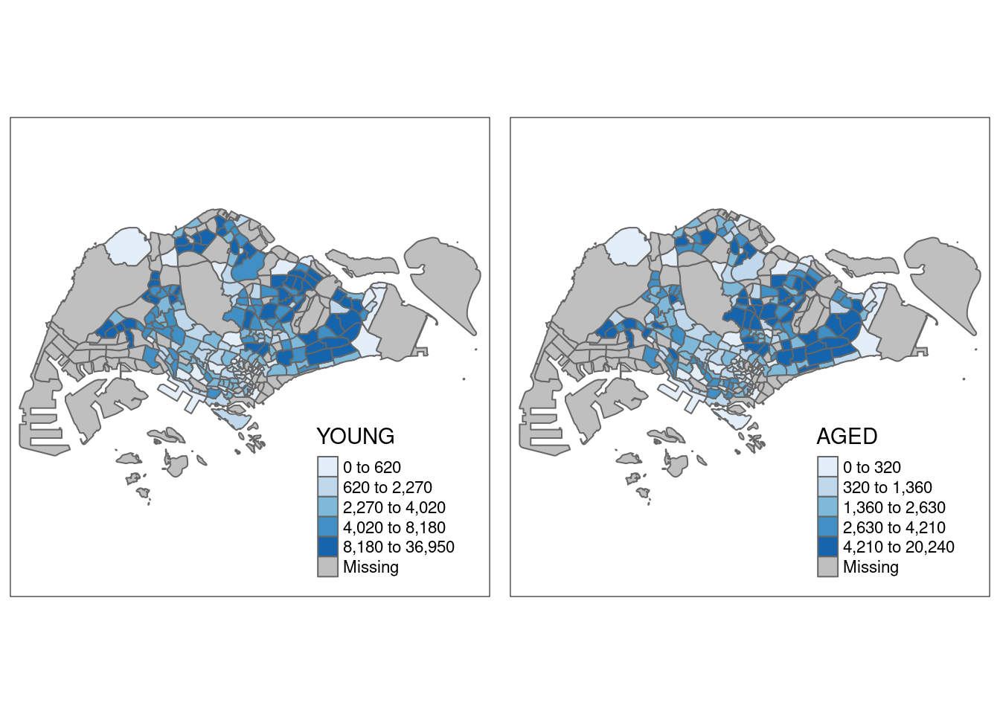

pacman::p_load(sf, tmap, tidyverse)Hands-on Exercise 2
Thematic Mapping and GeoVisualisation with R
Note: Lessons learned from hands-on exercises are documented in the notes tab.
Thematic mapping involves the use of map symbols to visualize selected properties of geographic features that are not naturally visible, such as population, temperature, crime rate, and property prices. Geovisualisation, on the other hand, works by providing graphical ideation to render a place, a phenomenon or a process visible.
Importing the data
mpsz <- st_read(dsn = "data/geospatial",
layer = "MP14_SUBZONE_WEB_PL")Reading layer `MP14_SUBZONE_WEB_PL' from data source
`/home/tropicbliss/GitHub/quarto-project/Hands-on_Ex/Hands-on_Ex02/data/geospatial'
using driver `ESRI Shapefile'
Simple feature collection with 323 features and 15 fields
Geometry type: MULTIPOLYGON
Dimension: XY
Bounding box: xmin: 2667.538 ymin: 15748.72 xmax: 56396.44 ymax: 50256.33
Projected CRS: SVY21popdata <- read_csv("data/aspatial/respopagesextod2011to2020.csv")Rows: 984656 Columns: 7
── Column specification ────────────────────────────────────────────────────────
Delimiter: ","
chr (5): PA, SZ, AG, Sex, TOD
dbl (2): Pop, Time
ℹ Use `spec()` to retrieve the full column specification for this data.
ℹ Specify the column types or set `show_col_types = FALSE` to quiet this message.Data wrangling
Before a thematic map can be prepared, you are required to prepare a data table with year 2020 values. The data table should include the variables PA, SZ, YOUNG, ECONOMY ACTIVE, AGED, TOTAL, DEPENDENCY.
YOUNG: age group 0 to 4 until age groyup 20 to 24,
ECONOMY ACTIVE: age group 25-29 until age group 60-64,
AGED: age group 65 and above,
TOTAL: all age group, and
DEPENDENCY: the ratio between young and aged against economy active group
popdata2020 <- popdata %>%
filter(Time == 2020) %>%
group_by(PA, SZ, AG) %>%
summarise(`POP` = sum(`Pop`)) %>%
ungroup()%>%
pivot_wider(names_from=AG,
values_from=POP) %>%
mutate(YOUNG = rowSums(.[3:6])
+rowSums(.[12])) %>%
mutate(`ECONOMY ACTIVE` = rowSums(.[7:11])+
rowSums(.[13:15]))%>%
mutate(`AGED`=rowSums(.[16:21])) %>%
mutate(`TOTAL`=rowSums(.[3:21])) %>%
mutate(`DEPENDENCY` = (`YOUNG` + `AGED`)
/`ECONOMY ACTIVE`) %>%
select(`PA`, `SZ`, `YOUNG`,
`ECONOMY ACTIVE`, `AGED`,
`TOTAL`, `DEPENDENCY`)`summarise()` has grouped output by 'PA', 'SZ'. You can override using the
`.groups` argument.We also need to convert the values in PA and SZ fields to uppercase, as the casing for both of these fields are inconsistent, so we need to normalise it. Moreover, both SUBZONE_N and PLN_AREA_N needs to be uppercase.
popdata2020 <- popdata2020 %>%
mutate_at(.vars = vars(PA, SZ),
.funs = list(toupper)) %>%
filter(`ECONOMY ACTIVE` > 0)Next, left_join() of dplyr is used to join the geographical data and attribute table using planning subzone name e.g. SUBZONE_N and SZ as the common identifier.
mpsz_pop2020 <- left_join(mpsz, popdata2020,
by = c("SUBZONE_N" = "SZ"))Cloropleth mapping
Choropleth mapping involves the symbolisation of enumeration units, such as countries, provinces, states, counties or census units, using area patterns or graduated colors. We are going to use choropleth maps to portray the spatial distribution of aged population of Singapore by Master Plan 2014 Subzone Boundary.
Two approaches can be used to prepare thematic map using tmap, they are:
Plotting a thematic map quickly by using qtm().
Plotting highly customisable thematic map by using tmap elements.
Using qtm
The easiest and quickest to draw a choropleth map using tmap is using qtm(). It is concise and provides a good default visualisation in many cases.
tmap_mode("plot")tmap mode set to plottingqtm(mpsz_pop2020,
fill = "DEPENDENCY",
fill.palette ="plasma")To create a higher quality cartographic choropleth map that includes more accurate and informative information:
tm_shape(mpsz_pop2020)+
tm_fill("DEPENDENCY",
style = "quantile",
palette = "plasma",
title = "Dependency ratio") +
tm_layout(main.title = "Distribution of Dependency Ratio by planning subzone",
main.title.position = "center",
main.title.size = 1.2,
legend.height = 0.45,
legend.width = 0.35,
frame = TRUE) +
tm_borders(alpha = 0.5) +
tm_compass(type="8star", size = 2) +
tm_scale_bar() +
tm_grid(alpha =0.2) +
tm_credits("Source: Planning Sub-zone boundary from Urban Redevelopment Authorithy (URA)\n and Population data from Department of Statistics DOS",
position = c("left", "bottom"))Using tm_* functions
To draw the basic simple features:
tm_shape(mpsz_pop2020) +
tm_polygons()Drawing using the target variable “dependency”:
tm_shape(mpsz_pop2020)+
tm_polygons("DEPENDENCY")This is essentially the same thing as:
tm_shape(mpsz_pop2020)+
tm_fill("DEPENDENCY") +
tm_borders(lwd = 0.1, alpha = 1)
Classifying data values
Using Jenks
tm_shape(mpsz_pop2020)+
tm_fill("DEPENDENCY",
n = 5,
palette = "plasma",
style = "jenks") +
tm_borders(alpha = 0.5)
Using equal data classification
tm_shape(mpsz_pop2020)+
tm_fill("DEPENDENCY",
n = 5,
palette = "plasma",
style = "equal") +
tm_borders(alpha = 0.5)As you can see, equal data classification is not particularly suited for heavily skewed data.
Using Fisher
tm_shape(mpsz_pop2020)+
tm_fill("DEPENDENCY",
n = 5,
palette = "plasma",
style = "fisher") +
tm_borders(alpha = 0.5)Using normal distribution
tm_shape(mpsz_pop2020)+
tm_fill("DEPENDENCY",
n = 5,
palette = "plasma",
style = "sd") +
tm_borders(alpha = 0.5)As you can see, the values are z-values.
Even more classification methods
tm_shape(mpsz_pop2020)+
tm_fill("DEPENDENCY",
n = 5,
palette = "plasma",
style = "hclust") +
tm_borders(alpha = 0.5)tm_shape(mpsz_pop2020)+
tm_fill("DEPENDENCY",
n = 5,
palette = "plasma",
style = "bclust") +
tm_borders(alpha = 0.5)
Committee Member: 1(1) 2(1) 3(1) 4(1) 5(1) 6(1) 7(1) 8(1) 9(1) 10(1)
Computing Hierarchical ClusteringManually setting the breakpoints
It is always a good practice to get some descriptive statistics on the variable before setting the break points.
summary(mpsz_pop2020$DEPENDENCY) Min. 1st Qu. Median Mean 3rd Qu. Max. NA's
0.1111 0.7147 0.7866 0.8585 0.8763 19.0000 92 tm_shape(mpsz_pop2020)+
tm_fill("DEPENDENCY",
breaks = c(0, 0.60, 0.70, 0.80, 0.90, 1.00)) +
tm_borders(alpha = 0.5)Warning: Values have found that are higher than the highest breakSetting the colour scheme
tm_shape(mpsz_pop2020)+
tm_fill("DEPENDENCY",
n = 6,
style = "quantile",
palette = "Blues") +
tm_borders(alpha = 0.5)To invert the colours, you can do this:
tm_shape(mpsz_pop2020)+
tm_fill("DEPENDENCY",
style = "quantile",
palette = "-Greens") +
tm_borders(alpha = 0.5)tm_shape(mpsz_pop2020)+
tm_fill("DEPENDENCY",
style = "quantile",
palette = "-Greens") +
tm_borders(alpha = 0.5) +
tmap_style("classic")tmap style set to "classic"other available styles are: "white", "gray", "natural", "cobalt", "col_blind", "albatross", "beaver", "bw", "watercolor" Adding map furniture
Legend
tm_shape(mpsz_pop2020)+
tm_fill("DEPENDENCY",
style = "jenks",
palette = "Blues",
legend.hist = TRUE,
legend.is.portrait = TRUE,
legend.hist.z = 0.1) +
tm_layout(main.title = "Distribution of Dependency Ratio by planning subzone \n(Jenks classification)",
main.title.position = "center",
main.title.size = 1,
legend.height = 0.45,
legend.width = 0.35,
legend.outside = FALSE,
legend.position = c("right", "bottom"),
frame = FALSE) +
tm_borders(alpha = 0.5)Drawing compass, scale, and grid lines
tm_shape(mpsz_pop2020)+
tm_fill("DEPENDENCY",
style = "quantile",
palette = "Blues",
title = "No. of persons") +
tm_layout(main.title = "Distribution of Dependency Ratio \nby planning subzone",
main.title.position = "center",
main.title.size = 1.2,
legend.height = 0.45,
legend.width = 0.35,
frame = TRUE) +
tm_borders(alpha = 0.5) +
tm_compass(type="8star", size = 2) +
tm_scale_bar(width = 0.15) +
tm_grid(lwd = 0.1, alpha = 0.2) +
tm_credits("Source: Planning Sub-zone boundary from Urban Redevelopment Authorithy (URA)\n and Population data from Department of Statistics DOS",
position = c("left", "bottom"))
Creating multiple small choropleth maps
Using ncols in tm_fill is one way to help you achieve this effect.
tm_shape(mpsz_pop2020)+
tm_fill(c("YOUNG", "AGED"),
style = "equal",
palette = "Blues") +
tm_layout(legend.position = c("right", "bottom")) +
tm_borders(alpha = 0.5) +
tmap_style("white")tmap style set to "white"other available styles are: "gray", "natural", "cobalt", "col_blind", "albatross", "beaver", "bw", "classic", "watercolor" tm_shape(mpsz_pop2020)+
tm_polygons(c("DEPENDENCY","AGED"),
style = c("equal", "quantile"),
palette = list("Blues","Greens")) +
tm_layout(legend.position = c("right", "bottom"))Another way is by using tm_facets.
tm_shape(mpsz_pop2020) +
tm_fill("DEPENDENCY",
style = "quantile",
palette = "Blues",
thres.poly = 0) +
tm_facets(by="REGION_N",
free.coords=TRUE,
drop.shapes=TRUE) +
tm_layout(legend.show = FALSE,
title.position = c("center", "center"),
title.size = 20) +
tm_borders(alpha = 0.5)Warning: The argument drop.shapes has been renamed to drop.units, and is
therefore deprecatedMultiple small choropleth maps can also be created by creating multiple stand-alone maps with tmap_arrange.
youngmap <- tm_shape(mpsz_pop2020)+
tm_polygons("YOUNG",
style = "quantile",
palette = "Blues")
agedmap <- tm_shape(mpsz_pop2020)+
tm_polygons("AGED",
style = "quantile",
palette = "Blues")
tmap_arrange(youngmap, agedmap, asp=1, ncol=2)
Selecting simple features
You can also use a selection function to choose which spatial objects to include in your choropleth map.
tm_shape(mpsz_pop2020[mpsz_pop2020$REGION_N=="CENTRAL REGION", ])+
tm_fill("DEPENDENCY",
style = "quantile",
palette = "Blues",
legend.hist = TRUE,
legend.is.portrait = TRUE,
legend.hist.z = 0.1) +
tm_layout(legend.outside = TRUE,
legend.height = 0.45,
legend.width = 5.0,
legend.position = c("right", "bottom"),
frame = FALSE) +
tm_borders(alpha = 0.5)Warning in pre_process_gt(x, interactive = interactive, orig_crs =
gm$shape.orig_crs): legend.width controls the width of the legend within a map.
Please use legend.outside.size to control the width of the outside legend